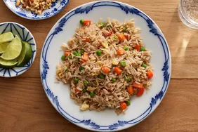

Fried Rice

Description
This fried rice recipe is quick and flavorful, perfect for using up leftover rice and a great base for adding vegetables and protein.
Ingredients
- 3 cups cooked rice
- 2 tablespoons oil
- 1 onion, diced
- 2 cloves garlic, minced
- 1 cup mixed vegetables (carrots, peas, etc.)
- 2 eggs, beaten
- 3 tablespoons soy sauce
- Green onions for garnish
Steps
- Heat oil in a large pan over medium heat. Sauté the onion and garlic until fragrant.
- Add the vegetables and cook until tender.
- Push the veggies to one side, then pour in the beaten eggs. Scramble until cooked through.
- Add the rice, soy sauce, and sesame oil, and stir to combine everything.
- Cook for a few minutes until the rice is heated through and slightly crispy.
- Garnish with green onions, serve, and enjoy.